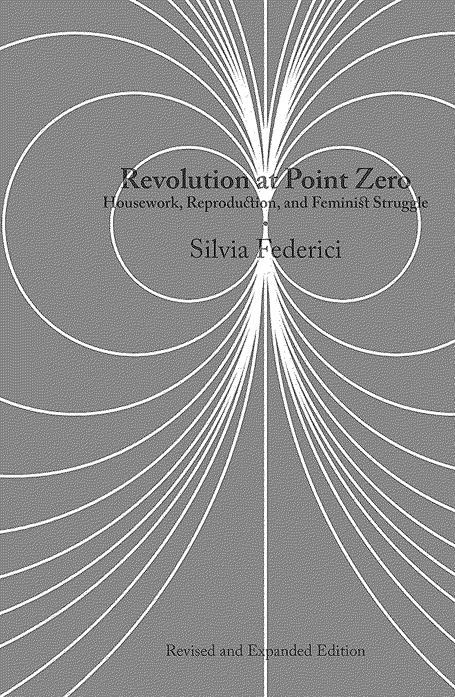

published on August 01, 2020 by PM Press
Written between 1974 and 2016, Revolution at Point Zero collects four decades of research and theorising on the nature of housework, social reproduction, and women’s struggles on this terrain—to escape it, to better its conditions, to reconstruct it in ways that provide an alternative to capitalist relations. Indeed, as Federici reveals, behind the capitalist organisation of work and the contradictions inherent in “alienated labor” is an explosive ground zero for revolutionary practice upon which are decided the daily realities of our collective reproduction.
Beginning with Federici’s organisational work in the Wages for Housework movement, the essays collected here unravel the power and politics of wide but related issues including the international restructuring of [[../the-notebook/reproductive-labor|reproductive work]] and its effects on the sexual division of labor, the globalisation of care work and sex work, the crisis of elder care, the development of affective labor, and the politics of the commons. This revised and expanded edition includes three additional essays and a new preface by the author.
High-Level Thoughts
A series of essays that explore globalisation, reproductive work and how these things intertwine to suppress women across the world. A series of essays, it’s a lot easier to read than a complete book. While some of the concepts like structural adjustment programs can seem fairly beyond those in the process of being radicalised, or those new to economic radicalisation Federici provides sufficient context to understand the concepts.
Summary Notes
War, Globalisation and Reproduction (2000)
First came the foreign bankers eager to lend at extortionate rates; then the financial controllers to see that the interest was paid; then the thousands of foreign advisors taking their cut. Finally, when the country was bankrupt and helpless, it was time for the foreign troops to “rescue” the ruler from his “rebellious” people. One last gulp and the country had gone. – Thomas Pakenham, The Scramble for Africa
Developed world initiatives are largely based on globalisation and pushing imperialism, but it takes the form of food aid and humanitarianism. These are just tactics to gain and maintain control over other states.
Comes in the form of structural adjustment programs (SAPs), introduced in the 19080s by the World Bank and the International Monetary Fund.
Americanisation of the world, and pushing “neoliberal” ideals and policy, including land privatisation, abolition of communal land tenure, downsizing the public sector and defunding social services, all these activities shift systems of controls from African governments to the World Bank and NGOs.
“Structural adjustment is war by other means” – Clausewitz
These “programs” were supposed to improve the state of the economy, but more than a decade on the opposite has happened, local economies have collapsed, foreign investment hasn’t materialised.
War forces people off the land, it takes producers away from the means of production. Then when the land is no longer being used, the land is reclaimed in the name of capitalists, boosting the production of cash crops and export oriented agriculture.
Controlling food and food based aid is able to do what arming militia can’t. Often delivered to both sides it can be delivered by organisations other than the Red Cross which allows them to intervene in areas of conflict. This was used to justify the US/UN military intervention in Somalia in 1992/3.
Even if troops aren’t involved in the distribution or guarding of food, the delivery of food is always intervention that prolongs war by feeding contending armies (more often then civilians). This in turn shapes military strategy and most benefits those who can take advantage of food distribution.
Because of the control food aid gives to imperial forces, shaping warfare it also contributes to the displacement of rural communities by setting up distribution around the needs of the NGOs.
So wether food aid actually benefits civilians is questionable at best. It seems more likely that the real motivation is to phase out subsistence farming, and create a dependence on important food both of which benefit the World Bank.
Questioning wether food aid is beneficial if probably seen as controversial in the west because its such a focus of NGOs and “charitable” efforts but we’ve known about the negative effects of food aid since the 1960s and its been the subject of a lot of protest and research.
Since then the axiom adopted is “you don’t help people by giving them food, but by giving them the tools to feed themselves”.
NGOs have further marginalised people caught in the cross section of conflict and famine because they have been denied the ability to control relief activities while being portrayed as helpless and unable to care for themselves unless you donate today, which then justifies military intervention.
This is a colonialism that aims at controlling policies and resources rather than gaining territorial possession, in political terms, a ‘philanthropic’, ‘humanitarian’, ‘foot-loose’ colonialism that aims at ‘governance’ rather than ’government…
Today’s imperialism is then by definition different, imperialism of the late nineteenth and early twentieth centuries was defined by weapons and force where we could hold someone to account, for example, King Leopold of Belgium who had a personal responsibility for the killing of millions of people in the Congo. But today as millions die as a consequence of structural adjustment, no one person is help to account because it is a social cause of death that is invisible to the western capitalist market.